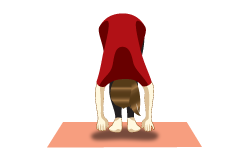
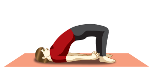
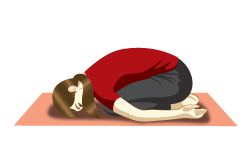
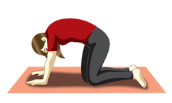
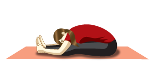
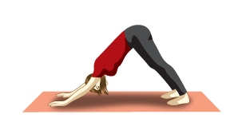
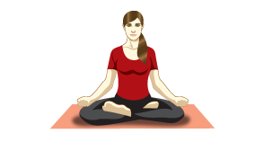
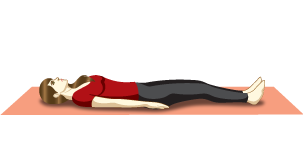

A few simple exercises to stretch your head and neck can help reduce the intensity of the headache.
STEPS TO FOLLOW :
Move your chin upwards and downwards, left and right, and bend your neck sideways towards each shoulder.
You can also try to slowly rotate the neck in clockwise and anticlockwise directions to help the shoulder and neck muscles relax.
So when a headache looms, you know what to do.
Hastapadasana (Standing Forward Bend)

The Standing Forward Bend invigorates the nervous system by increasing blood supply and also calms the mind.
Setu Bandhasana (Bridge Pose)

The Bridge Pose calms the brain and reduces anxiety..
Shishuasana (Child Pose)

The Child Pose calms down the nervous system and effectively reduces the pain.
Marjariasana (Cat stretch)

The Cat Stretch improves blood circulation and also relaxes the mind.
Paschimottanasana (Two-legged Forward bend)

The Two-Legged Forward Bend calms the brain and relieves stress. This yoga posture also relieves headache.
Adho Mukha Svanasana (Downward Facing Dog Pose)

The Downward Facing Dog Pose increases blood circulation to the brain and thus relieves headache.
Padmasana (Lotus Pose)

The Lotus Pose relaxes the mind and alleviates headache.
Shavasana (Corpse Pose)

The Corpse Pose rejuvenates the body by bringing it into a deep state of meditative rest. You can end the yoga routine by lying down in this pose for a couple of minutes.